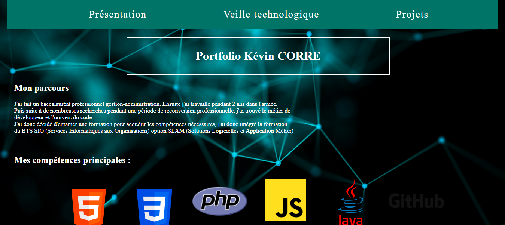

Projet 1
LaFleur | HTML, PHP
Réalisation d'un site de e-commerce pour la société LaFleur dans le but d'apprendre le language PHP.
Système de commande, variable de session, connexion à la base de données.
Lien projet
Projet 2
Jeu du + ou du - | HTML, JavaScript
Réalisation d'un jeu ou le joueur doit trouver un nombre entre 1 et 1000 avec des indications pour aider le joueur
Lien projet
Projet 3
BlackJack | HTML, CSS, JavaScript
Réalisation d'une application web du Blackjack pour apprendre à manipuler JavaScript
Lien projet
Projet 4

Portfollio | HTML, CSS, JavaScript
Réalisation d'un portfolio sous forme d'une application web qui comprend 3 parties : présentation, veille technologique et projets
Projet 5
Site de révision | HTML, CSS, PHP, JavaScript
Projet personnel ayant pour but d'approfondir mes connaissances et d'avoir une documentation personnalisée
Lien projet
Projet 6
Escape Game | HTML, CSS, PHP
Réalisation d'un site d'escape game d'une durée de 2 heures
Lien projet
Projet 7
ClickNClean | Java EE, JavaFX, Gestion de projet
Réalisation d'un service de mise en relation entre professionnel de ménage et propriétaire de biens. Version en client lourd et en web